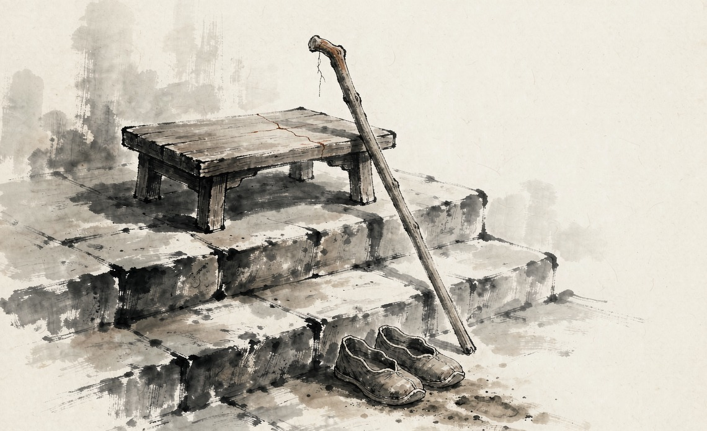
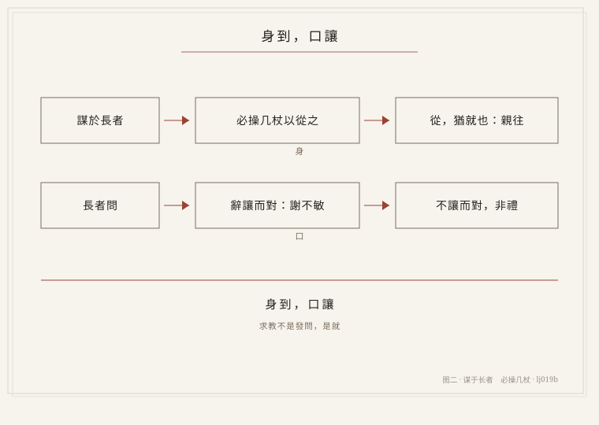

曲礼上 · 一·二十 · 第 19 课
这一节只两句，是全篇最短的几节之一。但它讲的是求教之礼：前一句说身体要到，后一句说言语要让。
说什么事：向长者谋事，必持几杖前往；长者发问，不辞让便作答，是非礼。
落在哪一层：教。上一节讲国怎么待老臣，这一节讲人怎么求长者——一套是养，一套是就。
为何编在此位：一·十九里有几杖、有老夫、有称名，都是长者的体面；此节把同一副几杖转到少者手里，礼的方向就显出来了。
【经】謀於長者，必操几杖以從之。長者問，不辭讓而對，非禮也。
谋 求决也，非泛问。所谋者事之疑，须长者断之。
长者 年长者也，兼取其德。本篇多以年言，而所尊者不止于年。
操 疏：「操，执持也。」
几杖 疏：「杖可以策身，几可以杖己，俱是养尊者之物，故于谋议之时将就也。」二物皆所以安长者之身。
从 郑注：「从，犹就也。」疏：「将就也。」——不是请长者来，是自己走过去。
辞让 先谢己之不敏，而后答。郑注：「当谢不敏，若曾子之为。」
对 答也。对之礼在让，不在快。
向长者谋事，必须持着几杖前往。长者发问，若不辞让就作答，是非礼。
求教不是发问，是就；作答不是抢答，是让。身先到，口后开。
第一层 「谋」不是「问」 问是求知，谋是求决。求决之事，须有人担；故经文不许你把问题抛过去，只许你走过去。一字之别，定了全节的姿态：谋者下，长者上；谋者动，长者静。
第二层 「操几杖」的分寸 几、杖皆养身之物。疏说「俱是养尊者之物」，故持之而往，不是送礼，是先把对方能不能坐得住、走得动这件事放在心上。今日求教多带问题，少带几杖：问题一堆，从不问对方此时有没有力气听。此句最实的教训在此。
第三层 「从，犹就也」 郑注四个字，是全节的骨。「就」是走过去，是位移。礼的方向由此定：由下而上，由近而远，由己而人。反过来的那种——把长者请来、把问题发过去、等答案自己回来——经文一句「不闻往教」早已堵住（一·十四）。两节合看，礼的方向只有一个。
第四层 「不辞让而对」为什么是非礼 郑注说「当谢不敏」。谢不敏不是虚伪的谦辞，它有三个实功：一让出时间，容长者把问说全；二让出位置，承认此题未必由我断；三让出余地，长者之问，或本是引出他自己的话，你若抢答，他的意思就没处放了。故「非礼」二字不是说态度不好，是说这一抢，把「问」的功能抢没了。
第五层 「若曾子之为」 郑注举曾子为证，不着一字解释。注家笔法如此：实例放在那里，读者自去礼书中认。曾子之对，见于礼书者多是先自陈不足而后言——这正是「谢不敏」的样子。
第六层 一台一让 前句管身，后句管口。身到了，口才不抢；口让了，身才不白到。两句合起来是一件事：求教者先把自己放低，低到对方可以不费力地说话。
与今日何干 今日求教多在即时通讯：一句「在吗」，一串问题，等答案。此节只问三件：你到不到，你带不带可坐之物，你先让不让。三件都不做，得到的多是客气话，不是断语。
| 左 | 右 |
|---|---|
| 谋于长者：求决，非求知 | 必操几杖以从之：几杖皆养尊者之物 |
| 从，犹就也：亲往 | 长者问：先谢不敏 |
| 不辞让而对，非礼也 | 身先到，口后开 |
| 来学不往教，方向只一头 | 谢不敏而后有对，不可只谢不对 |

